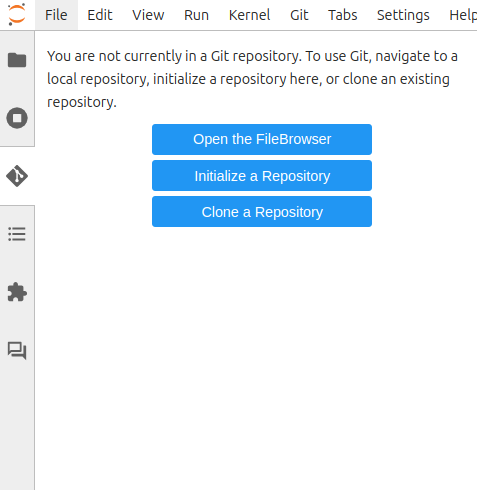
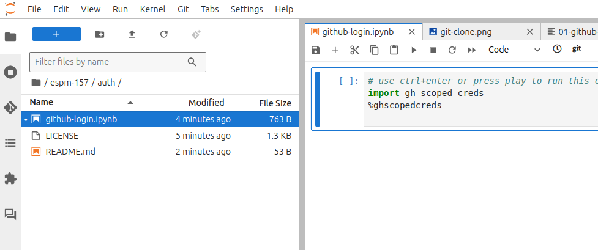

Intro to GitHub & JupyterHub¶
GitHub & Jupyter are two core platforms in our course and across data science. Over the course of this semester we will becoming very familiar with both, beginning with the most commonly used features and progressing to leveraging the more advanced corners of each.
Cloud Platforms¶
Both GitHub and JupyterHub are cloud based platforms. The term “cloud” is a fanciful way of saying that this software is running on “someone else’s computer,” usually (but not always), this means in a massive data center with rack upon rack of computers. Many of these data centers are owned by one of only a handful of ‘cloud providers’ – such as Amazon Web Services (AWS), Google, Microsoft, or IBM, among others. In both cases, we will access these platforms through a web browser.
A key concept that takes some getting used to is thinking about where our data ‘lives’ when working on these platforms. Remember that with each of these platforms, we are working on ‘someone else’s computer’. The browser only gives us a window into that computer. Documents you create on JupyterHub don’t automatically exist on your laptop. If your laptop completely died and you logged into JupyterHub on another platform, your work would still be there. However, if your partner logs into their JupyterHub, they are allocated their own separate computer. To share your work with your partner, your instructors, or the larger world, we will be using GitHub. GitHub is running on yet another computer (actually many connected computers), and we must push our work from the JupyterHub machine to GitHub, or pull changes from GitHub into JupyterHub. While many cloud-based services (like DropBox) automate some of these steps, data science tools such as git give us much more control of what and when we share.
GitHub¶
GitHub is a commercial website platform acquired by Microsoft and widely used by software developers for collaborative work on both public and private code bases. GitHub is built git, an open-source software for version control orginally created by Linus Torvalds, the creator of Linux. Many other open and proprietary platforms also use git as their foundation (notably GitLab and HuggingFace). While many other open source version control utilities exist besides git, git is easily the most widely used today. GitHub is a primary mechanism for ‘publishing’ or distributing software source-code, notebooks and much else. We will be using GitHub as a way of sharing code with your partner and submitting your assignments. While GitHub’s web interface is quite user friendly, the underlying technology of git has a reputation for being quite complex – in fact based on precisely the same technological ideas as the “block-chain”, although it has existed long before anyone decided to apply those ideas to currency. Many instructors therefore avoid teaching GitHub and git in courses!
Create an acount on GitHub
Use the GitHub Classroom magic link distributed in class to create a GitHub repository under the course’s GitHub Organization espm-157.
Continue below. As we progress, we will learn more about how to use git and GitHub – how to recover earlier versions, create branches and pull requests, leverage automation in GitHub Actions and much else.
JupyterHub¶
The Project Jupyter is an open-source initiative created and led by our own Fernando Perez and collaborators around the world. JupyterHub will be our home platform for the most of our work, where we will write and run code to perform tasks. Because we are running ‘on the cloud’ – on someone else’s computer, this avoids the requirement of having to install all the necessary software used in this course on your laptop. This also means that the computational heavy-lifting is all performed by the remote computer – so we will not rely on students having powerful new laptops to complete computationally intensive tasks. This does not mean that it is necessary to use a cloud provider to do things we do. All the software we are using is free and open source and can be installed on your own computer. Indeed, it is even possible for your computer to act like it’s own data center, talking to itself over precisely the same network protocols we would use to talk to a distant machine. In this way, JupyterHub ‘abstracts’ the computational environment away from the physical hardware, making it easy to deploy a workflow on machine of the appropriate size for the task at hand – be it a tiny application or massive job for a supercomputing center.
Log in to our JupyterHub, https://nature.datahub.berkeley.edu
JupyterHub, JupyterLab, and Jupyter Notebooks – the Jupyter ecosystem is a rich and changing landscape, which can often be confusing! A JupyterHub (such as ours, https://nature.datahub.berkeley.edu, sometimes refered to at Berkeley as a DataHub) can serve many users with individual instances of the JupyterLab (a web-based IDE), which can in turn allow a user to work with many Jupyter Notebooks (and many other file formats and interfaces, including RStudio and the open-source Visual Studio Code Server). Jupyter Notebooks are individual files (previously known as ipython notebooks, and still indicated with ipynb extension), a JSON-based serialization combining code, code outputs, and markdown text. These notebooks are used throughout the data science community in industry and academia, and can be used not only in a JupyterLab IDE but in a wide variety of IDEs that have shamelessly copied it, including Google Colab, Microsoft VSCode, and Amazon SageMaker.
Initial setup¶
Authentication
There’s a few one-time setup steps we need to work with Git and GitHub from Jupyterhub. First, in order to access private repositories, we need a way for our JupyterHub instance to authenticate our identity when trying to access our private stuff on GitHub, or when trying to share (write) stuff to our GitHub account. For security purposes, we will use a token-based authentication process to authenticate with GitHub.
Try to clone our “authentication” repo, https://github.com/espm-157-f24/auth into your Jupyterhub using the Clone Repository button from the Git menu (left side). (We will review this together in class).

Then use the “File” menu on the left side to open the auth folder and then opn the Jupyter Notebook, github-login.ipynb. Try running the cell in that notebook.

Tada! You have authenticated with GitHub on your Jupyterhub. In future, you will only need to re-open this login notebook to authenticate, as it will remain on your JupyterHub.
You can now clone private repositories. Note that before you can clone a new repository, you will need to navigate your file-pane out of the current auth/ repo and back to the home directory by clicking the folder icon.
Introduce yourself to git
Commits in Git are ‘signed’ to indicate who made the changes. The first time git is set up it needs to know the user’s name and email by running the following commands in a terminal. Use the “launcher” menu in Jupyter to open a new terminal and run the following commands.
git config --global user.name "Your Name"
git config --global user.email "you@berkeley.edu"
Some users perfer to use pseudonyms. The email does not have to be valid, though using the same address as you registered with GitHub will let it display your commits as comming from you. Now that git knows who you are, we are ready to start making our own commits.